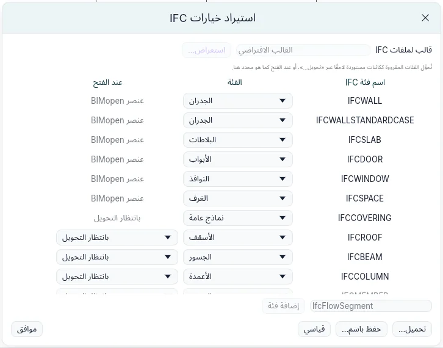
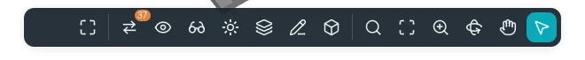
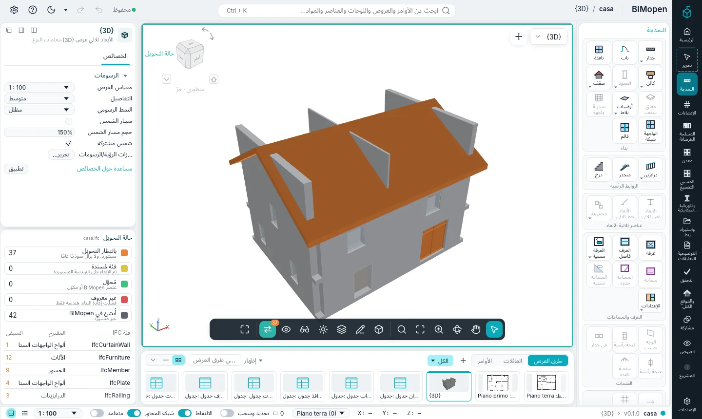
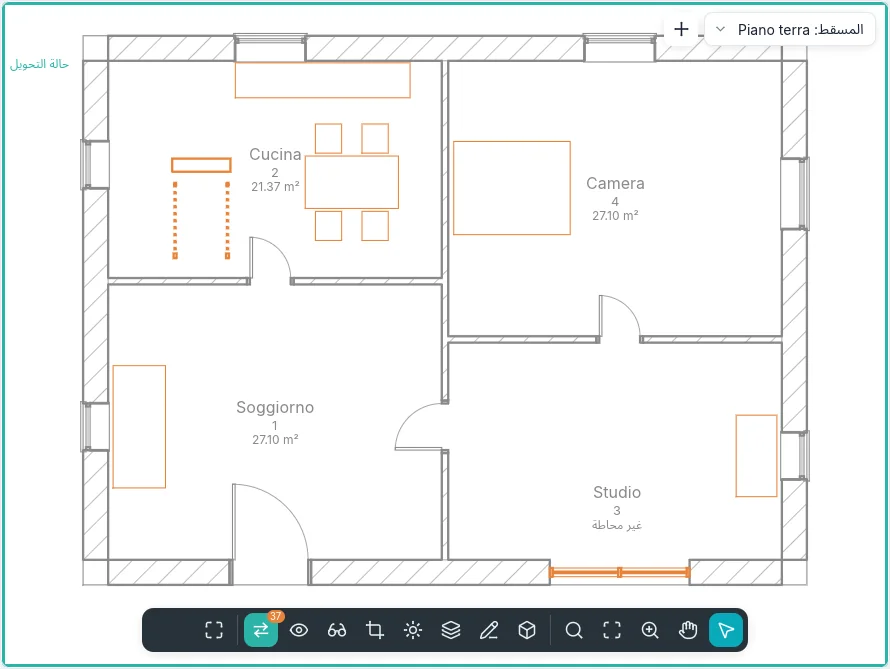
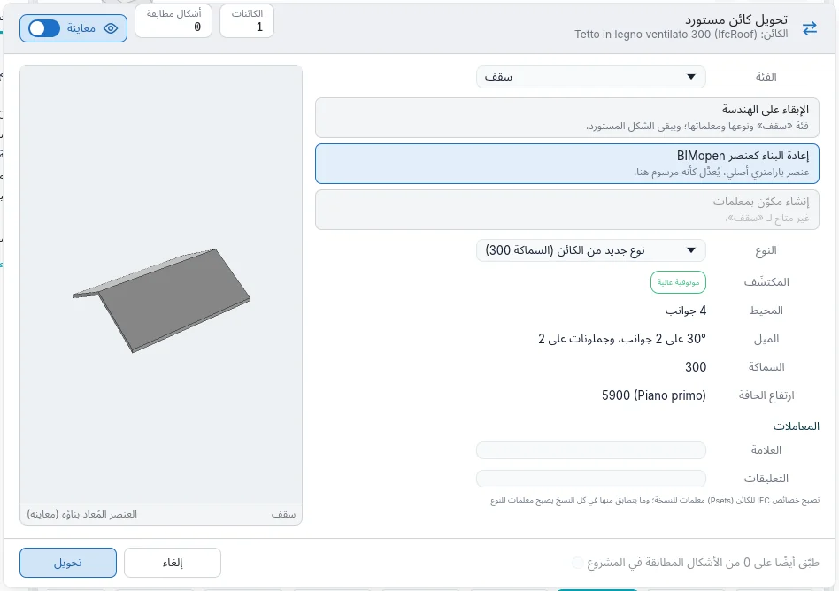
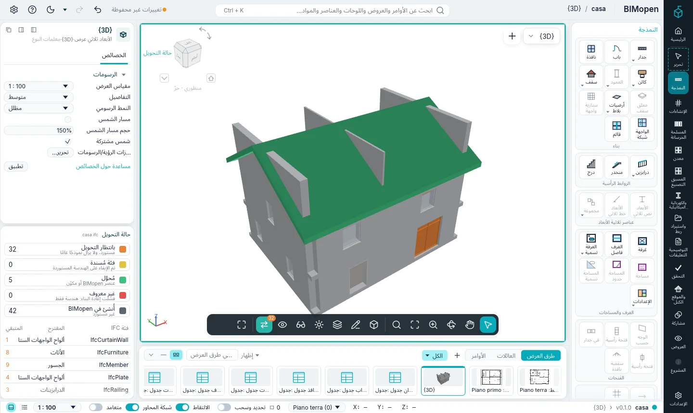
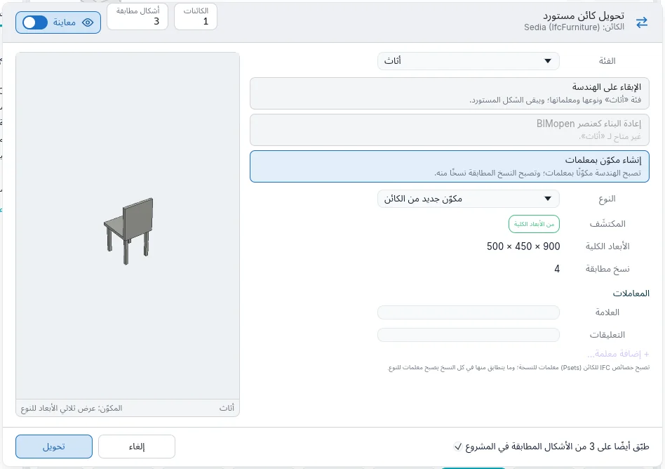
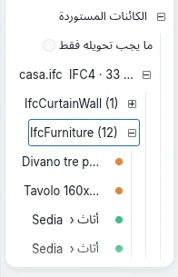

الاستيراد والتحويل
يصل النموذج المصنوع ببرنامج آخر كملف IFC. يقرأ BIMopen جدرانه وأرضياته وأبوابه ونوافذه وفراغاته كعناصر خاصة به. وكل ما سوى ذلك مما له شكل (الأسقف والجسور والأعمدة والسلالم والدرابزين والواجهات الستارية والأثاث والأدوات الصحية) يبقى كائنًا مستوردًا: هندسته كما قُرئت، كنموذج عام. ثم يجعل تحويل من كل كائن مستورد عنصرًا من BIMopen من أي فئة، متى احتجت ذلك وبالقدر الذي تحتاجه.
فتح ملف IFC
- افتح قائمة التطبيق (علامة BIMopen أعلى الشريط الجانبي) واختر فتح ➤ IFC….
- اختر ملف IFC2x3 أو IFC4.
ينشئ BIMopen مشروعًا جديدًا: تصبح الطوابق مستويات، وتُعاد بناء الجدران من محورها، وتصبح البلاطات أرضيات، وتدخل الأبواب والنوافذ في الجدران التي تقطعها فتحاتها، وتصبح الفراغات غرفًا. وكل كائن آخر له شكل يصبح كائنًا مستوردًا. ويحتفظ كل واحد منها بـ:
- الملف الذي جاء منه وصيغته (
casa.ifc · IFC4)؛ - فئة IFC الخاصة به (
IfcRoof،IfcFurniture…) ومعرّفه؛ - الكائن الذي هو جزء منه: قلبات السلم، وألواح الواجهة الستارية؛
- مجموعات خصائصه وكمياته، في الخصائص تحت خصائص IFC.
تحصي الرسائل ما قُرئ وما قُرّب وما تُرك.
استيراد خيارات IFC
يفتح تنسيق ▸ خيارات IFC… نافذة استيراد خيارات IFC: ما تصبح عليه كل فئة IFC عند فتح ملف.

- تُقرأ الجدران والبلاطات والأبواب والنوافذ والفراغات كـ عنصر BIMopen؛ ويمكن قراءة أي منها بدلًا من ذلك ككائن مستورد (نماذج عامة) أو تركه (غير مستورد).
- تُقرأ الفئات الأخرى ككائنات مستوردة. الفئة هي الفئة المقترحة لكل فئة IFC عند تحويلها: أي فئة في BIMopen.
- يحدد عند الفتح ما يحدث لها عند فتح الملف: بانتظار التحويل يتركها لوقت لاحق؛ والإبقاء على الهندسة أو إعادة البناء كعنصر BIMopen أو إنشاء مكوّن بمعلمات يحوّلها فورًا (انظر أدناه).
- يضيف إضافة فئة فئة لا تتضمنها القائمة.
- يقرأ تحميل… ملف ربط فئات، ويكتب حفظ باسم… واحدًا: ملف نصي، فئة في كل سطر. ويعيد قياسي الربط الافتراضي.
تُحفظ الخيارات من جلسة إلى أخرى.
حالة التحويل
ما دام المشروع يحتوي على كائنات مستوردة بانتظار التحويل، يعرض شريط العرض حالة التحويل مع عددها. ويذكر التلميح عددها وعدد فئات IFC التي تنتمي إليها.

انقر عليه: يعرض العرض كل كائن بلون حالته، داخل إطار أخضر مزرق.
| اللون | الحالة | المعنى |
|---|---|---|
| برتقالي | بانتظار التحويل | مستورد، ولا يزال نموذجًا عامًا |
| أصفر | فئة مُسندة | الهندسة المستوردة محفوظة، مع فئة |
| أخضر | مُحوَّل | عنصر BIMopen أو نسخة من مكوّن |
| أحمر | غير معروف | لم تتعرف إعادة البناء على الشكل: هندسة فقط |
| رمادي | أُنشئ في BIMopen | غير مستورد |

تعمل في المساقط والمقاطع والواجهات والعروض ثلاثية الأبعاد، ولا تغيّر إلا النافذة: يبقى النموذج والعروض الأخرى كما هي. وما دامت مفعّلة لا يمكن تحديد إلا الكائنات المستوردة.

تحتوي لوحة حالة التحويل، تحت الخصائص، على:
- مفتاح الألوان مع عدد كل حالة: النقر على حالة يخفيها في العرض أو يُظهرها من جديد؛
- فئات IFC التي فيها كائنات بانتظار التحويل، والفئة المقترحة لكل منها وعدد ما تبقى. النقر على فئة يحدد كائناتها المطلوب تحويلها ويفتح تحويل….
عندما لا يتبقى شيء للتحويل، تقول اللوحة ذلك. أوقف حالة التحويل فيخرج زرها من شريط العرض.
في النمط الكلاسيكي تكون اللوحة علامة تبويب بجانب الخصائص؛ وفي وضع اللمس تكون ورقة تُفتح من إعدادات العرض.
تحويل كائن مستورد
حدد كائنًا مستوردًا أو أكثر: تُفتح البطاقة السياقية تحرير | الكائنات المستوردة. ويفتح تحويل… نافذة تحويل كائن مستورد.

- الفئة: ما يصبح عليه الكائن. يأتي اقتراح فئة IFC أولًا.
- إحدى الطرق الثلاث (أدناه). تظهر بالرمادي الطريقة التي لا تنطبق على الفئة.
- النوع: أحد أنواع الفئة، أو نوع جديد مصنوع من الكائن.
- المكتشَف: ما يقرؤه BIMopen في الشكل ومدى ثقته به.
- المعاملات: العلامة والتعليقات، وخصائص IFC للكائن.
- تحويل.
تُظهر المعاينة ما سيصبح عليه الكائن. ويخفيها مفتاح معاينة في الترويسة؛ وتحتفظ النافذة بحجمها.
الطرق الثلاث
| الطريقة | الفئات | ما يحدث |
|---|---|---|
| الإبقاء على الهندسة | كلها | يأخذ الكائن الفئة ونوعًا ومعلمات. ويُحتسب في الجداول والمرشحات والرؤية وتصدير IFC كعنصر من تلك الفئة؛ ويبقى شكله المستورد. ويمكن نقله وتدويره وعكسه. |
| إعادة البناء كعنصر BIMopen | الجدران والأرضيات والأسقف والأبواب والنوافذ | يقرأ BIMopen الشكل وينشئ العنصر الأصلي، القابل للتعديل كأنه مرسوم: محور الجدار وسماكته وارتفاعه؛ حدود الأرضية وسماكتها ومنسوب سطحها العلوي؛ حدود السقف وميوله وسماكته وارتفاع حافته؛ باب أو نافذة في الجدار الذي يقع فيه، بعرضه وارتفاعه وعتبته. |
| إنشاء مكوّن بمعلمات | الأثاث والأدوات الصحية والنماذج العامة والأبواب والنوافذ والأعمدة والجسور | تصبح الهندسة نوع مكوّن بـ العرض والعمق والارتفاع من أبعادها الكلية؛ وتغييرها يمطّ الشكل. ويصبح الكائن نسخة منه. |
الشكل الذي لا يمكن إعادة بنائه كالفئة المختارة يصبح أحمر (غير معروف) ويبقى كما كان: حوّله من جديد مع الإبقاء على هندسته. وتأتي إعادة بناء الأعمدة والجسور والسلالم والدرابزين في مرحلة لاحقة.
تفعل الفئة في الخصائص ما تفعله الإبقاء على الهندسة: اختيار فئة هناك يحوّل الكائن المحدد فورًا.

مكوّنات من كائنات مستوردة
يفتح إنشاء مكوّن في البطاقة السياقية النافذة مع اختيار إنشاء مكوّن بمعلمات.

تصبح خصائص IFC المتطابقة في جميع النسخ معلمات للنوع؛ وتبقى المختلفة منها لكل نسخة. ويظهر المكوّن في فهرس المشروع تحت الكائنات المستوردة، وتغيّر معلمات النوع الخاصة بها جميع النسخ دفعة واحدة.
الأشكال المطابقة
تُعرف نسخ الشكل الواحد، المنقولة والمدوّرة في المسقط، على أنها مطابقة. يحددها تحديد الأشكال المطابقة؛ وفي النافذة يحوّلها معًا طبّق أيضًا على N من الأشكال المطابقة في المشروع (مفعّل افتراضيًا عند إنشاء مكوّن). وكنسخ من مكوّن واحد تشغل ذاكرة أقل وتُرسم أسرع في النماذج الكبيرة.
تحديد الكائنات المستوردة
- يحدد تحديد الفئة الكائنات المستوردة من فئة IFC نفسها.
- فئة في لوحة حالة التحويل، أو تحويل الكل (N)… على فئة في فهرس المشروع، تحدد كائناتها المطلوب تحويلها وتفتح النافذة.
- الكائن الذي هو جزء من آخر (قلبة من سلم) يذهب معه: تحويل الكل يأخذ أجزاءه معه.
الكائنات المستوردة في فهرس المشروع
تسرد الكائنات المستوردة في فهرس المشروع كل ملف مقروء، بصيغته وعدد الكائنات المتبقية للتحويل؛ وتحته فئات IFC، وتحت كل فئة كائناتها بلون حالتها، والفئة التي أصبحت عليها بعد تحويلها. والكائنات المكوّنة من أجزاء تسرد أجزاءها تحتها.

- يخفي ما يجب تحويله فقط ما حُوِّل بالفعل.
- النقر على كائن يحدده؛ والنقر المزدوج يُظهره في عرض.
- الزر الأيمن على فئة: تحويل الكل (N)…، تحديد كل ما يجب تحويله (N)، استعادة الأصول (N).
- الزر الأيمن على ملف: الأوامر نفسها، وإزالة مراجع المصدر….
- الزر الأيمن على كائن: تحويل…، تحديد الأشكال المطابقة، إظهار في العرض، إخفاء في العرض، استعادة الأصل.
استعادة الأصول
ما يستبدله التحويل يبقى في المشروع، في ملف .bimopen: الكائن الأصلي، مع الأجزاء التي أخذها معه.
ويعيده استعادة الأصل (في البطاقة السياقية، أو في فهرس المشروع، أو في قائمة الزر الأيمن) كما
استُورد، برتقاليًا من جديد.
تطلب التأكيد أولًا، وتذكر ما سيُفقد: التعديلات على العناصر المُعاد بناؤها أو المكوّنات، والأبواب والنوافذ في الجدران المحوّلة. والمكوّن الذي أنشأه التحويل يذهب مع آخر نسخة منه. ويتراجع أمر التراجع عن تحويل أو استعادة كأي تعديل آخر.
تُخزَّن هندسة الأصول مرة واحدة لكل شبكة مطابقة، فلا يكلّف الاحتفاظ بها كثيرًا. وعندما تصبح التحويلات نهائية، يحذف إزالة مراجع المصدر… على الملف في فهرس المشروع الأصول: بعدها لا يعود استعادة الأصل ممكنًا.
قريبًا
- تحديث من الملف: إعادة قراءة الملف المصدر وتحديث كائناته.
- أدوات حسب الوجه، لوضع الجدران والأرضيات والأسقف على الأشكال الحرة والمنحنية.
- إعادة بناء الأعمدة والجسور والسلالم والدرابزين.
- تحويل كائنات ملفات OBJ وglTF بالنافذة نفسها.